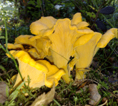
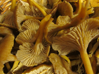

Svampar
-
Gul kantarell (Cantharellus cibarius)

Finns var
I barr- och lövskog över hela landet, utom i Norrlands inland. Även i fjällbjörkskog.
Kännetecken
Helt gul, köttet gulvitt. Under hatten grenade åsar som går ned på foten. Skarp, pepprig smak.
Bra att veta
Bra nybörjarsvamp, som inte kan förväxlas med någon giftig svamp. Frys in efter förkokning, bör ej torkas. -
Trattkantarell (Cantharellus tubaeformis)

Finns var
I mossig barrskog över hela landet. Leta bland blåbärsris och i mossan. Trivs i måttligt sura skogsmarker.
Kännetecken
Hatten, som på översidan är ljust gråbrun till brunsvart, har en djup navel eller är trattformig. På den gula, senare grå, undersidan syns tydliga grenade åsar som går ned på foten. Den smala foten är ihålig.
Bra att veta
Förkoka i eget spad, stek i smör och använd i såser, stuvningar, soppor och grytor. Torkas med fördel.
Delikatess
Utöver det vanliga säljer Envido även egenproducerad svampkrydda (av gul- och trattkantarell).
Nedan finner du ett par exempel på vad den kan användas till.
För att beställa, maila en förfrågan till info@envido.se.
Soppa
Trattkantarellsoppa
Antal portioner: 4Tid: 30 min
Ingredienser
Ca 25 g torkade Trattkantareller (1 brk)3 st schalottenlökar
1 st vitlöksklyfta
2 msk smör
1 msk vetemjöl
1 l vatten
2 tärningar grönsaksbuljong
3 dl mellangrädde eller vispgrädde
2 krm salt
1 krm vitpeppar
1 dl persilja och/eller gräslök till garnering
1 tsk vitvinsvinäger
0.75 dl torr sherry
Gör så här
1. Pudra över mjölet över smöret och rör om så att det blandas. Tillsätt svampkryddan och löken. Slå på vatten och grädde under omrörning. Smula i buljongtärningarna och låt det hela koka sakta i 10 minuter.2. Salta och peppra och tillsätt vinägern som hjälper till att ta fram den fina svampsmaken. Häll till sist i sherryn (kan uteslutas).
3. Med torkad svampkrydda: Häll den torkade svampen i en skål och häll över en del av vattnet så att svampen täcks. Låt den stå och svälla i cirka 30 min. Sila av spadet och spara det. Använd det tillsammans med buljongen (totalt 1 liter) när soppan ska spädas. Tillaga sedan soppan som ovan.